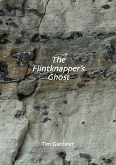

Tim Gardiner, The Flintknapper’s Ghost, A Review by Patricia Prime
Tim Gardiner, The Flintknapper’s Ghost, Alba Publishing, Uxbridge, UK. (2018) ISBN: 978-1-912773-03-9.
The Flintknapper’s Ghost is Tim Gardiner’s first collection of haibun. The poems reveal a connection with Breckland, in Norfolk, UK.
Gardiner’s ancestors were well-known flintknappers in Brandon, Norfolk.
The key theme of the book is one of transition from childhood and growing up through to the trials of adult life, loneliness and death. The haibun also reflect the landscape and focus on the author’s love of the Stour Estuary and its history.
The collection begins with the section called after the title, “The Flintknapper’s Ghost” (10), in which it appears that the flintknapper was murdered after a pub crawl and his body dumped in the river – a legend that startles the boys camping on the heath:
Murdered after a pub brawl, his body was dumped in the Little Ouse. Every full moon his ghost emerges from the reeds, sparks flying from skeletal fingers, or so the legend goes.
What makes these haibun so compelling for me is that they are delving into a lifetime of experiences, and this is done by a writer who is not only an ecologist, but a children’s author, editor and poet. In “Geese” (13), he is a boy visiting the Malvern Hills, where he says:
I hang my glow-in-the-dark skeleton from the bedroom door handle before we set off for an afternoon walk.
The parallelism of the excitement of reaching the top of a hill for the first time and the noise of a fighter jet passing below gives a good indication of the boy’s experience:
A fighter jet passes below us, the sonic BOOM! Shattering our peace.
“Summer at Skyfall” (17) takes us to a priest’s hole in summer. It has been a severe winter, but now “all is forgiven in the harsh heat of August” and the path that the poet is following “takes me to the chapel’s gravestones.” “Tears” (20) takes us on a train journey with the boy and his father. At the station, someone (we are not told who it is), “turns towards us to leave” and the boy notices the tears in her eyes. This theme of loss, and the necessity to, however difficult, combat it, threads through the haibun.
In the next section, “The Second Step”, the poet is older. In “Kingairloch (27), he and his wife are attempting to climb a mountain:
The summit on the far side of the loch has been tempting me all week. With no map to hand or obvious path it’s going to be a tricky climb through Sphagnum mire and purple moor-grass, but a summit with a view of far off Ben Nevis is a fair reward for hours of toil.
This haibun seems to sum up the whole collection, both regarding the author’s interest in nature and adventure. However, the beauty and austerity of the surroundings is complicated by the differences between man and wife. The haibun ends: “We walk down in silence, more than just failure between us.” In “The Walls” (32), the poet is again at odds with his companion:
I sit in the shelter, trapped with my thoughts. She left yesterday, the final conversation just a few empty words on my part.
“The Ducking Stool” (37) is a wonderful poem which, for me, characterises the witty, refreshing philosophy of the collection Its focus is on lowering a loved one into the ducking pool at midnight, and it ends with the following haiku:
naked moon
do wild hearts
pass the test
In the third section, “The Wreck”, I particularly enjoyed the title poem, with its world of water, boats and a brief encounter with a young couple. It has two principal atmospheres: one of remembrance and conversation, and one of spring and landscape:
A dog yaps and splashes near the half submerged wreck, its owners relaxing in the shade of a young oak. I walk the winding seawall path past clumps of fennel to where his boat rests, rusting on succulent samphire. (42).
The short haibun, “The Drifter” (51) is focused on a painting, whose subject is a boat and its boatman. The atmospherics of being alone, absorbed in one’s work do not suggest loneliness, they have a quality of the magical and inevitably evoke the world of the lone fisherman:
The boat appears empty from a distance. It’s only on closer inspection that the boatman becomes visible, mending a fishing net.
The final haibun, “The Haikuist” (58) does what I like poems to do: it celebrates. The poem shows the celebration of a haikuist’s lifetime work: haiku books he’s translated and the “mechanics of haiku composition”; then his mastery of the harmonica. The haibun ends:
I sense a sadness when he speaks of family but I don’t enquire further. To round off a convivial morning, the haikuist displays a considerable talent for playing the harmonica.
deep breath
just for a few seconds
I hear a young man
The world of The Flintknapper’s Ghost may be both familiar to some readers and curious to others: it is both strange and yet recognisable. There is a dry and intelligent wit in these inventive haibun which invite the reader to ask questions about the world and the knowledge of the environment we might take for granted. |